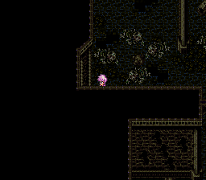
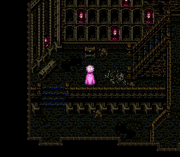
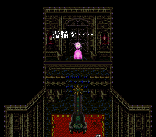
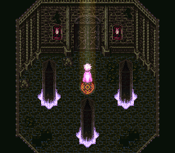

- 마왕전의 어비스 게이트를 닫는다
- 마왕전 최심부에 가는 방법
- 마왕전의 어비스 게이트의 숨겨진 보스와 보물들
- 출현 몬스터 (고정)
- 람용
- 레드 드래곤
- 거인
마왕전의 어비스 게이트를 닫는다
- 피드나 구시가지와 연결되어 있는 마왕전에 간다.
- 마왕전 지하 최심부에 있는 문 앞에 도착하면 "반지를..."(指輪を…)이라는 메시지가 나온다.
- 랑스의 북서쪽 건물 들어가면 성왕가에 갈 수 있다.
- 성왕가 2층에 있는 당주와 대화해서 왕가의 반지(王家の指輪)를 받는다.
- 마왕전 지하에서 왕가의 반지를 사용해서 문을 연다.
- 계속 진행해서 마왕전의 어비스 게이트에 들어간다.
- 십자로 중앙의 붉은 빛이 결계석에 들어가면 워프한다.
- 1회 워프하고 북쪽으로 간다.
- 내부에 있는 <보스:아라케스>를 쓰러뜨리고 어비스 게이트를 닫는다.
| 명칭 |
HP |
입수 자금 |
입수 아이템 |
| アラケス(환영) |
24000 |
264 |
? |
간파 가능 : 블레이드 롤(ブレードロール), 지진 공격(地震攻撃), 에이밍(エイミング), 몸통박치기(体当たり)
전체 공격의 대회전(大回転), 전체 혼란의 테라보이스(テラーボイス)가 강력하다. 그리고 2회 행동을 한다.
주로 물리 공격을 해온다. 따라서 간파를 가지고 있다면 수월하게 상대할 수 있다.
참고로 사마귀족과 싸움으로 전멸해도 게임 오버가 되지 않는다는 특징이 있다. 이것을 이용해서 반복적으로 싸워서 많은 기술을 번뜩이면 좋다. 간파도 번뜩여두면 나중에 마귀족 본체와 싸울 때 유리하다. 마왕전의 어비스 게이트에서 출현하는 몬스터는 각종 물리 공격에 대한 간파를 번뜩일 수 있는 기회가 많으니까 최대한 간파를 취득시켜두면 매우 편해진다.
마왕전 최심부에 가는 방법

|

|
| 1. 비밀 통로 |
2. 죽음의 기도 |

|

|
| 3. 봉인된 문 |
4. 워프 포인트 |
1. 비밀 통로
긴 계단 지나서 다음 맵의 북동쪽으로 가보면 빛이 비치는 계단이 있다. 이 계단을 내려가서 십자 모양의 해골이 있는 위치의 좌측 벽으로 가면 비밀 통로로 들어갈 수 있다. 이 루트가 올바른 길이다.
2. 죽음의 기도
비밀 통로를 지나서 진행하는 도중에 해골계 몬스터 2마리가 있는 방이 있다. 여기에 보물 상자가 1개 있는데 열어보면 텅 비어 있지만,
죽음의 기도를 들을 수 있다. 나중에
동굴사원적의 보스를 격파 이벤트를 할 때 필요한 조건이므로 미리 봐두자.
3. 봉인된 문
넓은 장소에 악마계와 요정계 몬스터가 있다. 여기의 북쪽으로 올라가면 봉인된 문이 있다.
4. 워프 포인트
죽음의 기도가 있던 방을 나와 남쪽 방에 가보면 워프 포인트가 있다. 포인트 위에 있는 몬스터를 쓰러뜨리면 마왕전 최상층으로 올라갈 수 있다.
마왕전의 어비스 게이트의 숨겨진 보스와 보물들
- 마왕전의 어비스 게이트가 있는 장소를 돌아다니면 많은 보물 상자를 발견할 수 있다. 보상 앞을 지키는 보스도 있다.
- 어비스 게이트를 닫은 후, 다시 와보면 대부분의 몬스터가 사라져 있으니 이때 들어와서 보상을 찾는 것이 좋다.
- 보상 중에는 합성 술법의 오의서. 빛의 벽(光の壁)을 입수할 수 있으니 반드시 얻어두자. (미노타우로스 2마리가 지키고 있는 방)
출현 몬스터 (고정)
| 명칭 |
HP |
입수 자금 |
입수 아이템 |
| アラケスの戦鬼 |
1680 |
44 |
ツヴァイハンダー
高級傷薬
バイキングアクス
강탈:バイキングアクス |
| ミノタウロス |
2530 |
12 |
技の香薬
羅刹のベルト
バスターアクス
강탈:バスターアクス |
<아라케스의 전귀>는 페로몬(フェロモン), 블레이드 롤(ブレードロール), 뼈부수기(骨砕き), 스매쉬(スマッシュ), 몸통박치기(体当たり) 등등의 간파 기술을 번뜩일 수 있다. 마왕전의 어비스 게이트를 닫아버리면 더 이상 출현하지 않으므로 닫기 전에 많이 싸워서 미리 번뜩여두자.
람용
| 명칭 |
HP |
입수 자금 |
입수 아이템 |
| 嵐龍 |
7999 |
0 |
? |
방어력이 상당히 높다. 람용을 쓰러뜨리고 뒤에 있는 보물 상자에서는 운석의 조각(いん石のかけら)을 입수할 수 있다.
레드 드래곤
| 명칭 |
HP |
입수 자금 |
입수 아이템 |
| レッドドラゴン |
9900 |
204 |
? |
람용보다는 약하다. 뒤에 있는 보물 상자에서는 운석의 조각(いん石のかけら)을 입수할 수 있다.
거인
| 명칭 |
HP |
입수 자금 |
입수 아이템 |
| 巨人 |
12000 |
0 |
강탈:トリプルソード |
레드 드래곤과 비슷한 수준의 강함을 보인다. 뒤에 있는 보물 상자에서는 운석의 조각(いん石のかけら)을 입수할 수 있다.